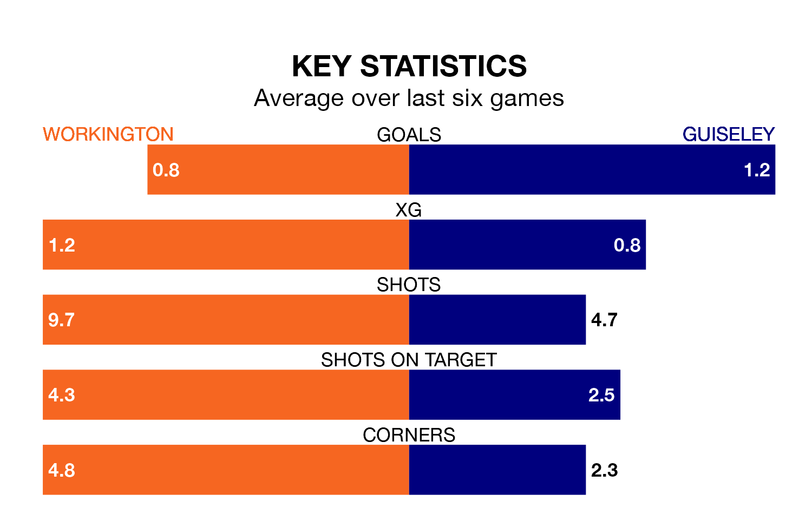

Workington welcome Guiseley to Borough Park on Saturday looking to pick up points to end their seven-game losing streak.
Workington's struggles have left them with no points from their last six Northern Premier League matches, while their opponents have earned three from a possible 18.
With 66 goals in 38 games so far this season, Guiseley are scoring more than average in the league with 1.7 goals per game. And they are conceding at an average rate, letting in 59 goals at a rate of 1.6 per game.
Workington, meanwhile, are average scorers, with 1.6 goals per game. They have conceded 2.0 goals per game.
The home team are 17th in the table after 40 games, of which they have won 10 and drawn 11, earning 41 points.
The Lions are seven places ahead of Workington in 10th, with 17 wins and seven draws putting them on 58 points.
Workington's last match was on April 20, a 2-0 loss against Macclesfield.
Guiseley beat United of Manchester 3-1 last time out, also on April 20.
Updated: 07:59 (UTC), 26/04/24